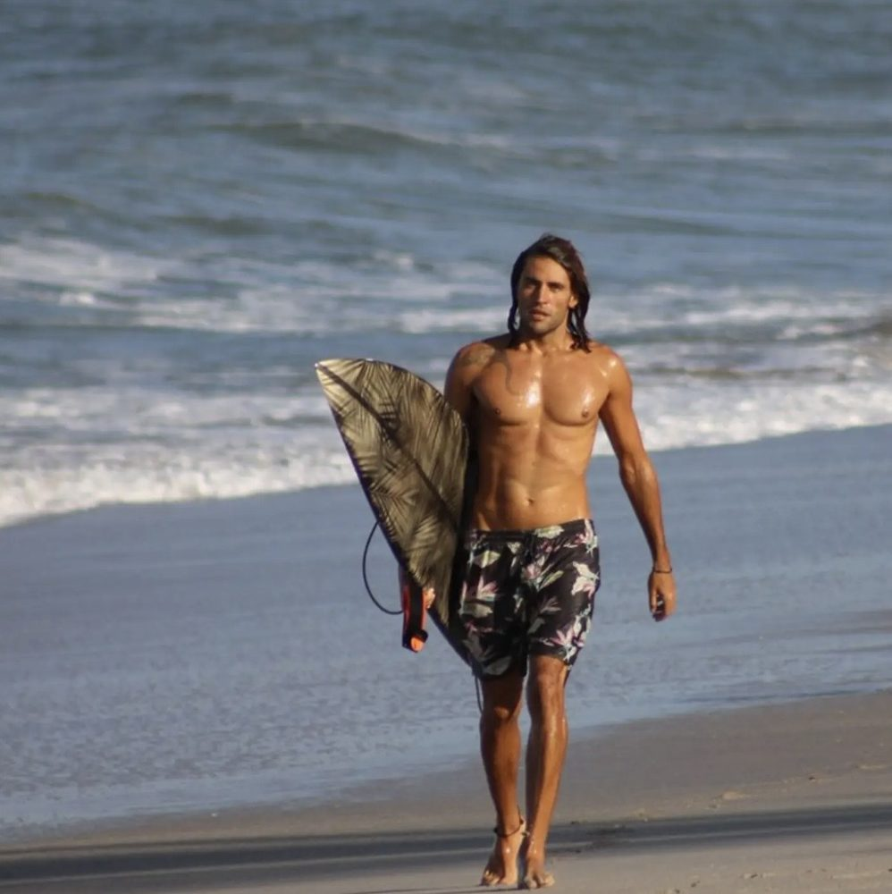
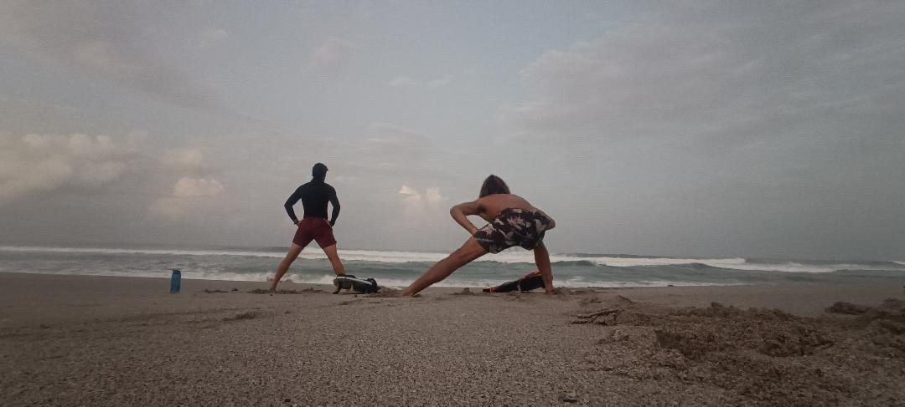

Feedback semanal
Antes de entrar al agua sabés con qué objetivo vas. Al salir repasamos qué conocimientos ganaste, para que los uses en el próximo entrenamiento.
Surf para alumnos con experiencia
Para cuando sentís que te estancaste: en lo físico, en lo técnico o arriba del skate.

Para quién es
Chicos que ya se paran y quieren ir por más. Adultos que surfean hace años y sienten que se frenaron. A cualquier edad llega un punto en el que las sesiones se repiten y el progreso no aparece: puede ser el físico, la técnica o el skate. Este programa es para destrabar eso, con un plan armado a tu medida.
Entrenamiento integral
Armamos un plan de entrenamiento integral según lo que necesitás destrabar. Puede combinar:
Y en el agua trabajamos:
Seguimiento
Una en el agua, clase a clase. Otra una vez por mes, para mirar el surf desde más lejos.
Antes de entrar al agua sabés con qué objetivo vas. Al salir repasamos qué conocimientos ganaste, para que los uses en el próximo entrenamiento.
Una charla por videollamada, o presencial, para sumar todo lo que no se aprende solo remando:



Contame dónde sentís que te trabaste y armamos tu plan.